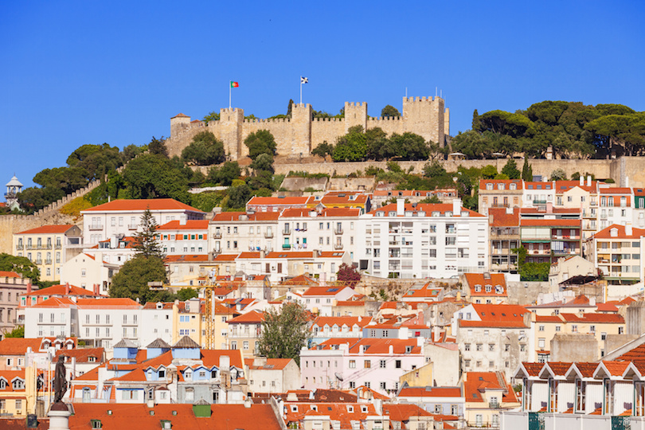

lisbon has one of the best tourist attractions in the world.Once a quiet sleepy town Lisbon has become one of the most exciting cities in Europe(and one of the cities we'd move to for a whim!).Fromnight life to beach life, from hipster cafes to shopping dtreets- you name it ! they have got it all. let Lisbion bring you in an adventure with some of the places and attractions that you can't miss.
The Belem tower Torre De Belem was built between 1514 and 1520 in a manuelino style by the portugees architect and sculpor Fransisco de Arrudo. It was classified as a world Heritage site in 1983.Constructed on the Northen bank of the of the Tgus river this tower was used to defend the city. Years later it was transformed into a lighthouse and customs house.It is situated very close to Jerominos Monastery.
The castle is entwinted in lisbons early history, it saw the fall of the Romans to the visigoths, experienced the fierce conflicts between the Arabs and the christians, survived the formidable sieges by the castalions and witnessed the birth of portugal as a seafaring nation.
It is a catholic monument and shrine dedicated to the sacred heart of jesus christ overlooking the city of Lisbon situated Almanda in Portugal. It was inspired by christ the redeemer statue of Rio de janeiro in brazil after the cardinal Patriach of lisbon eas inaugurated on 17 May 1959.